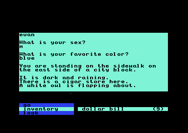

Area 1 · The text adventure
The text adventure
Labyrinth begins with a text adventure. You name your character, answer the setup questions, and explore the streets outside a movie theater. Two word wheels hold the available actions and objects. Entering go home takes you from the sidewalk to a room with a television and a camcorder.

The playable opening, before the first command. The active wheel shows neighboring choices around the selected word.
 The result of go home. Both pictures were captured from the supplied disk image.
The result of go home. Both pictures were captured from the supplied disk image.
The city as a workflow
The opening connects places with commands and gates some actions on what you carry. Select a place or an arrow to see its description, condition and result. Solid blue arrows move between locations. Dashed amber arrows show actions at the counter. The gray connection follows the coin choice into the later theater encounter.
A route through the cinema, with optional change collection. Details appear below the diagram; on narrow screens, scroll the diagram sideways. The counter actions can be taken in either order. This is a guide to verified decisions, rather than a complete playable opening.
Sources and checks
Movement selections are checked against the original direction handlers. The five-dollar ticket, two-dollar purchase and counter changes have original-code tests; the counter route also has live command observations. Later conversation timing and the graphical maze remain outside this diagram.
Words stored once
Labyrinth can insert a dictionary word into a sentence using two bytes: a format code and a word number. The format can give the word a capital initial or add a following space. Choose a word to see the stored instruction expand.
A passage, piece by piece
The opening mixes ordinary letters with dictionary references. Step through a stored passage to see which words come from the dictionary and where the game starts a new line.
Sources and checks
Passages at $9867 and $98A7, checked against the stored bytes and the game’s parser at each step. Line breaks follow the stored instructions; the display uses a browser font.
Sources and checks
The $67B5 parser chooses the format; $68D4 reads the word through the pointer tables at $D800 and $D900. All dictionary entries and four formats were checked against the game’s routine in a 6502 simulator: 1,024 cases.
The opening’s letters
The dialogue’s letters are eight pixels wide and eight high. Each stored byte supplies one row, with a set bit lighting a pixel. The same font holds graphical symbols and blank slots alongside the letters.
Sources and checks
The RAM font at $D000, extracted from the opening’s saved state. Every embedded byte is checked against the source listing; all 256 glyphs are compared with the site’s C64 character renderer. The viewer shows monochrome shapes.
View the opening’s letter shapes
 The opening’s glyph sheet. Digits and letters occupy their ASCII positions; other slots include shapes and blank cells. The source listing documents the identified font data.
The opening’s glyph sheet. Digits and letters occupy their ASCII positions; other slots include shapes and blank cells. The source listing documents the identified font data.Words that change the scene
Typing selects words on the active wheel. Space changes wheels, and Return carries out the selected command. The opening route visits a beggar and a popcorn counter before the movie begins.
- The slot menu offers F1, F3, and F5.
- The setup accepts a name, sex, and favorite color.
- Commands such as take camcorder and give nickel produce different responses as the location changes.
- The cinema sequence leads from text descriptions to a picture of the character at a gate.
A mistyped letter disappears
Typing G selects give. Adding Z matches nothing, so the game drops that letter and keeps G. Adding O then selects go. Delete clears the whole prefix while leaving the selected word in place.
- Accepted prefix
- Selected word
Sources and checks
A recorded sequence from the opening’s action wheel, checked in VICE and against the original routines at $5F2C, $612C, and $61F7. This replay preserves that saved state’s choices. A separate simulator check exercises 112 accepted prefixes across 23 available entries, with upper- and lowercase input.
GO HOME checks where you are
The command stays the same, but its result depends on your location. On the street, go home selects the home location. At home, the command replies “You are home!” At the ticket counter, the command says you cannot go home from there.
Sources and checks
The opening’s handler at $9114 reads the location’s entry from $AA58 and $AA66. A zero high byte selects a destination; another value selects a reply. All 14 table entries are checked against the original handler. Destinations are shown before their arrival routine runs.
The ticket changes GO EAST
At the ticket counter, go east checks whether you carry a ticket before consulting the movement table. Without a ticket, the reply is “You can't enter without a ticket.” With one, the table selects the lobby destination.
The purchase follows a shared payment path. Giving the dollar bill with at least five dollars available deducts four dollars in the ticket handler, then another dollar in the common give routine. The girl hands over one ticket.
Sources and checks
The east handler at $90F4 checks the ticket entry at $6740. The purchase path starts at $9327 and uses $087F to remove the final dollar. The eastward table decision is checked for every location index and every ticket byte; the purchase is checked with one through nine dollars. Arrival effects remain separate.
Two dollars for cold popcorn
At the popcorn stand, giving a dollar bill can spend two dollars: one in the counter’s branch and one in the shared GIVE routine. The first purchase adds a box of popcorn. After that, a purchase flag makes the woman refuse another dollar payment, leaving your money alone.
Sources and checks
The dollar-payment branch at $93E1 checks $9688, updates the dollar and popcorn inventory entries, and reaches the shared debit at $087F. The example is checked against the original GIVE handler with one through nine dollars and every purchase-flag byte. The response mentions change and a dropped nickel; the complaint example below follows their collection.
 The popcorn counter responds to a complaint. This scene was reached using ordinary commands.
The popcorn counter responds to a complaint. This scene was reached using ordinary commands.
Two complaints recover the missing quarter
The popcorn menu asks $1.25, but the woman takes two dollars and leaves only two quarters in change. The first complaint gets an excuse. The second produces another quarter. Three quarters in change restore the advertised $1.25 price. Further complaints produce a rebuke.
This example starts just after the purchase. TAKE collects the available quarters together, then exposes the dropped nickel. Complaining before collecting the change puts three quarters on the counter; complaining after collecting it adds one more to pick up.
The starting inventory includes one nickel from character setup. The dropped nickel is an additional coin. This example follows a route that keeps the starting nickel.
Returning a nickel after picking up the dropped one gets the woman’s thanks. The game remembers the return. While the teenager in the main theater accepts popcorn, keeping the dropped nickel makes him take the whole box. Returning it makes him take a handful and leave the box in your inventory.
 Returning the nickel gets the woman’s thanks. A further complaint gets “You sure complain a lot.” Both responses were reached with ordinary commands.
Returning the nickel gets the woman’s thanks. A further complaint gets “You sure complain a lot.” Both responses were reached with ordinary commands.
Sources and checks
TAKE at $927C, the complaint branch at $95B7, and the return branch at $943A update the pickup slot, quarter count, and nickel flags. The later offer checks $0575 at $9485. Counter sequences were replayed with ordinary inputs in VICE. The example is also compared with the original routines, including both later popcorn-offer branches; that later comparison isolates the offer before the movie transition.
Replies from the city
The city’s replies mix ordinary letters with dictionary words. The same format carries street descriptions, shop transactions, and the beggar’s one-word hints. All 127 opening text streams are available below. Choose a stored reply to read its expansion. The text reflects the saved setup; a reply’s presence does not establish how to reach it in play.
Sources and checks
Text records at $7910, $968E, and $9816 through $A9E7, checked against the original text parser at $67B5. The records include the menu asking $1.25 for popcorn, while the payment branch spends two dollar bills and its reply describes change. The complaint example follows coin collection and the missing-quarter refund. Pronoun substitutions reflect the captured setup; the game can change them.
Area 2 · Entry mechanic verified · Other gate behavior remains open
The entrance gate
After the cinema, the graphical adventure places you outside the gate. Holding up from the saved starting position begins the entry sequence. Moving to either side first leaves the character against the foreground boundary.
The movement map divides the approach into horizontal columns. In the four columns shown here, the doorway column permits a deeper approach than its neighbors. Reaching depth 50 starts a script that changes the gate state and queues the first corridor. The diagram shows those world-coordinate checks, rather than a rectangle painted over the screen.
 The naturally reached gate state before movement. With no input, the test remained here for 300 frames.
The naturally reached gate state before movement. With no input, the test remained here for 300 frames.
 Moving right before approaching leaves the player beside the doorway, at depth 24.
Moving right before approaching leaves the player beside the doorway, at depth 24.
The doorway boundary
In the live comparison, an aligned approach reached depth 51 after 150 frames and then entered the scripted sequence. Approaching from the left or right stopped at depth 24. A store watch caught the deferred request for scene 2; the ordinary route continued to its title card and the first brick corridor.
Sources and checks
The classifier at $4171 reads map cells at $0600, translates their type through $073E, and selects the depth bound from $41F0. The gate threshold is at $8D92. Gate stage $8CC0 requests sound 5, waits through four sixty-tick intervals, and queues scene 2 for the resident dispatcher at $59AF. The diagram’s lookup and threshold are compared with the original code across every low horizontal-coordinate and depth byte. The gate listing is partial; its remaining code, art and shared-engine ownership remain open.
See the corridor reached through the gate
 The first graphical corridor, reached by walking up through the gate. Its command wheels are visible below the scene.
The first graphical corridor, reached by walking up through the gate. Its command wheels are visible below the scene.A speech stored beside the gate script
The same resource holds seven lines addressing the cinema audience, including the player by name. Choose a line to read it. This is a viewer of stored text: the natural gate snapshot is already at sequence phase 14. In a nonzero scene, the phase-zero branch skips the seven speech records and starts phase 7. The complete route that presents the speech remains to be checked live.
The script keeps a phase and a countdown. When a countdown expires, it loads the next delay and advances the phase. Phases 0–6 select these messages; phases 7–13 continue the actor and gate sequence. Pressing fire on joystick port 1 sets the latch that can jump an early phase to 7. At phase 14, the script goes directly to checking the player’s approach depth. The remaining visual effects are open.
Sources and checks
Message selection at $8E09, pointer tables at $8ED4/$8EDB, countdowns at $8EC5, and sequence dispatcher at $8CD8. The port-one sampler at $19AE supplies the fire latch at $1993; ordinary press, hold and release were checked live. The reader below normalizes whitespace and omits the stored formatting controls. All seven texts are checked against the original parser; phase/countdown decisions are checked separately against the original dispatcher.